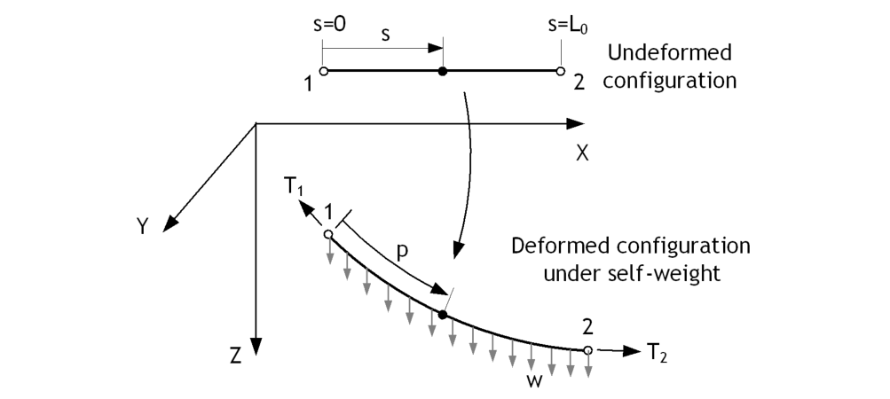

Cable 요소
탄성현수선케이블요소(Elastic Catenary Cable element)는 자중을 받는 상태를 기준으로 유도되는 정해에 기반한 요소로서 장대교량의 케이블을 모델링하는 데 사용될 수 있다. 트러스 요소와 같이 축력만을 전달할 수 있으며, 기하비선형을 고려할 수 있지만 재료모델을 선형탄성을 가정한다.
Cable 요소의 단면은 Beam 단면으로 정의한다. 요소가 첫 번째 사용되는 해석단계에서 *Field, Type=CableLength 명령으로 무응력 길이 를 정의해 주어야 한다.
Cable 요소는 요소가 중력방향과 평형하게 배치되면 해가 수렴되지 않는다. 또한 무응력길이가 너무 커거나 작으면 수렴되지 않으므로 주의해서 사용해야 한다.

Fig. 4.4-1. 케이블 요소
케이블 요소를 사용할 때는 다음을 주의하도록 한다.
- 케이블 요소의 단면은 탄성재료가 적용된 Beam 단면을 사용하며, 변단면은 적용할 수 없으며 면적값만 정식화에 사용된다.
- GravityLoad가 반드시 가력되어야 한다.
- 요소가 생성되는 시점에서 무응력길이의 초기값이 반드시 지정되어야만 한다(CableLength 필드)
- 현재 Cable 요소는 질량 행렬을 지원하지 않으며 정적 해석에서만 사용할 수 있다.
- Cable 요소는 기하비선형 요소로 해석에 포함될 경우 비선형 해석이 수행된다.
Example
*Material, Type=IsoElasticity, Name=mat
210E9, 0, 0, 1E5
*SECTION, TYPE=Beam, NAME=cable
*Cell, TYPE=Value, Mat=cable
0.01 # area, ...
*Element, Type=Cable, ELSet=CableSet
1001, 1001, 1002, S=cable
*Load, TYPE=Gravity, Name=gr
101, 0, 0, -9.8
...
*Step
...
*Field, Type=CableLength
1, 200.
*Element, Type=Cable
케이블 요소를 정의
*Element, Type=Cable, ELSet=elset
id, n1, n2, S=section
...
Specifications
- No. of nodes: 2
- Fields: BSF=[Nx], BSE=[Ex], uniaxial model response at element center
- Compatible section: CableSection
- Active DOFs: X,Y,Z